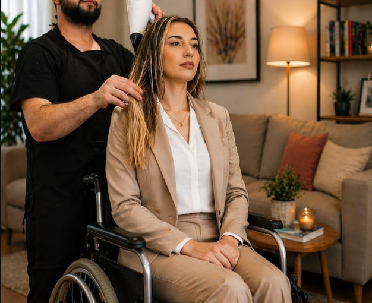

Atendimento Especial
No Salão L³.js, o Atendimento Especial é um serviço totalmente dedicado ao acolhimento humanizado, inclusivo e sem pressa. Nosso espaço e nossa equipe foram cuidadosamente preparados para receber com excelência pessoas com deficiência (PcD), idosos com limitações de mobilidade ou saúde, crianças neurodivergentes (como TDAH e autismo) e clientes com alta sensibilidade sensorial.
Oferecemos uma estrutura acessível e um ambiente sensorialmente adaptado, com controle de ruídos, iluminação suave e a opção de agendamento em horários de menor movimento para evitar sobrecarga sensorial. Contamos com rampas de acesso, espaços amplos e lavatórios ergonômicos que garantem total conforto e segurança durante toda a visita.
Nossos profissionais são capacitados para atuar com paciência, empatia e extrema sensibilidade, adaptando cada procedimento, postura e ritmo às necessidades individuais de cada cliente. No Salão L³.js, acreditamos que a beleza é para todos e trabalhamos para transformar o cuidado pessoal em uma experiência leve, segura e acolhedora.
